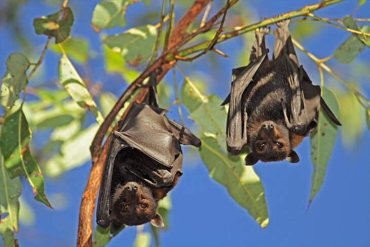

Образ жизни
Почти все летучие мыши (как и вообще рукокрылые) ведут ночной образ жизни, а днём спят. Из-за особого хрупкого строения костей, летучие мыши совершенно беззащитны на земле. Они не могут передвигаться на своих лапках и отталкиваться от земли, как, например, птицы. Поэтому днем летучие мыши спят вниз головой. Данное положение позволяет им начать полет непосредственно во время падения. Кроме того, летучие мыши часто устраивают себе уютные укрытия, забившись в трещины деревьев, скал или в щели в постройках. Убежищами могут служить полости в деревьях, пещеры, гроты и различные искусственные сооружения, как надземные, так и подземные. Летучие мыши способны впадать в оцепенение, сопровождающееся уменьшением скорости обмена веществ, интенсивности дыхания и частоты сердечных сокращений, многие способны впадать в длительную сезонную спячку (до 8 месяцев).